1016D14 cylinder heads - r + r and replace gaskets with engine removed
- Path
- Procedures > 10 ENGINE > 1016 CYLINDER HEAD/S > 1016D cylinder heads - remove and re-fit > 1016D14 cylinder heads - r + r and replace gaskets with engine removed
- Kind
- repair procedure (removal / refitting; the operation number is the code)
- Applies to
- engines: 2.5 V6, 3.2 V6; all production periods
- Interactive page
- https://sloeber94.github.io/elrnDB-a156/en/#/3239065
Applies to: engines: 2.5 V6; all production periods
 Removing
Removing
 Refitting
RefittingProceed with the removal 1004D40 engine - position on stand and remove .
1. Disconnect the earth cable from the left cylinder head tappet cover.
2. Disconnect the electrical connection of the motorized throttle body actuator.
 | Name | Connector |
|---|---|---|
2 | Throttle body actuator |
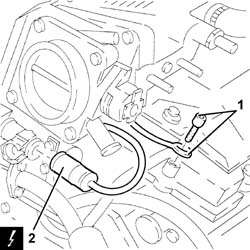
Applies to: engines: 2.5 V6; all production periods
1. Disconnect the oil vapour recovery pipe.
2. Disconnect the condensation oil return pipe from the separator.
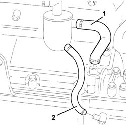
Applies to: engines: 2.5 V6; all production periods
Slacken the bolts on the clips securing the air intake ducts to the intake chamber.
1. Undo the bolts (1a) and remove the complete intake duct (1b).
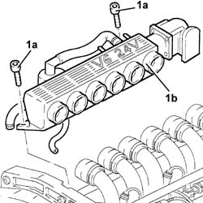
Applies to: engines: 2.5 V6; all production periods
1. Disconnect the electrical connection for the cam angle sensor (light blue).
| Name | Connector |
|---|---|---|
1 | Timing sensor |
2. Disconnect the electrical connection for the engine rpm and timng sensor (black).
| Name | Connector |
|---|---|---|
2 | Rpm sensor |
3. Disconnect the electrical connection for the rear detonation sensor (black).
| Name | Connector |
|---|---|---|
3 | Detonation sensor - 1 |
4. Disconnect the electrical connection from the combined sender unit for the engine coolant temperature gauge and warning light.
| Name | Connector |
|---|---|---|
4 | Coolant temperature sender unit |
5. Disconnect the electrical connection from the engine coolant temperature sensor.
| Name | Connector |
|---|---|---|
5 | Engine temperature sensor |
6. Disconnect the earth cable from the left cylinder head tappet cover.
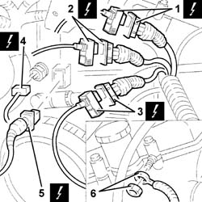
Applies to: engines: 2.5 V6; all production periods
1. Undo the bolts (1a) and remove the left cylinder head ignition coils cover (1b).
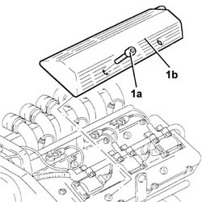
Applies to: engines: 2.5 V6; all production periods
1. Disconnect the electrical connection for the air conditioning compressor.
| Name | Connector |
|---|---|---|
1 | Air conditioning compressor "on" electromagnet |
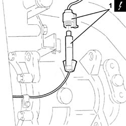
Applies to: engines: 2.5 V6; all production periods
1. Disconnect the electrical connection for the front detonation sensor.
| Name | Connector |
|---|---|---|
1 | Knock sensor - 2 |
2. Undo the bolts (2a) and remove the electrical wiring securing brackets (2b).
3. Disconnect the electrical connections from the injectors.
| Name | Connector |
|---|---|---|
3 | Injector |
4. Disconnect the electrical connections from the ignition coils.
| Name | Connector |
|---|---|---|
4 | Ignition coil |
5. Remove the electrical wiring after releasing it from the securing bands.
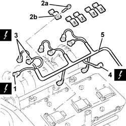
Applies to: engines: 2.5 V6; all production periods
1. Loosen the engine components drive belt tension by adjusting the belt tensioner.
2. Lock the belt tensioner with the belt slack inserting a suitable peg.
3. Remove the engine components single drive belt.
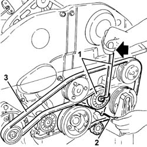
Applies to: engines: 2.5 V6; all production periods
1. Undo the bolts (1a) and remove the timing belt guards (1b).
2. Undo the bolt joining the timing belt rear guards.
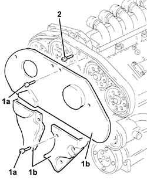
Applies to: engines: 2.5 V6; all production periods
1. Slacken the timing belt tensioner bolts.
2. Remove the timing belt from the camshaft pulleys.
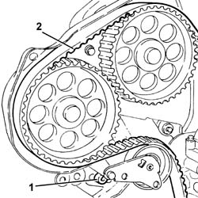
Applies to: engines: 2.5 V6; all production periods
1. Disconnect the flexible pipe from the fuel distribution manifold rigid pipe.
2. Undo the bolts (2a) and remove the bracket (2b) securing the timing belt guard.
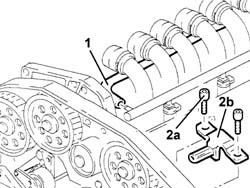
Applies to: engines: 2.5 V6; all production periods
1. Undo the bolts (1a) and remove the ignition coils (1b) from the cylinder heads.
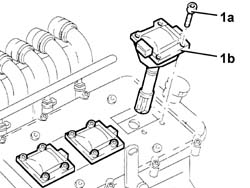
Applies to: engines: 2.5 V6; all production periods
1. Disconnect, from the thermostat, the coolant supply pipe to the water/oil heat exchanger.
2. Undo the bolts (2a) and remove the thermostat (2b).
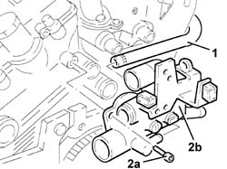
Applies to: engines: 2.5 V6; all production periods
1. Undo the upper bolt (1a), the lower nut (1b) and remove the engine oil dipstick (1c).
2. Undo the nuts (2a) and remove the protection (2b) for the left cylinder head exhaust manifold.
3. Undo the nuts (3a) and remove the exhaust manifolds (3b) from the cylinder heads.
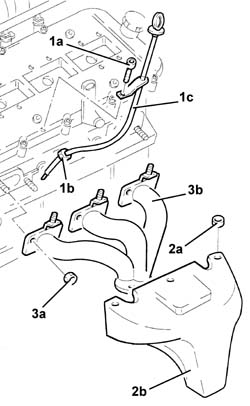
Applies to: engines: 2.5 V6; all production periods
1. Undo the bolt securing the alternator bracket to the right cylinder head.
2. Remove the bolt securing the power steering pump to the left cylinder head.
3. Undo the bolts (3a) and remove the tappet covers (3b).
4. Undo the bolts (4a) and remove the cylinder heads (4b).
5. Remove the cylinder head gaskets.
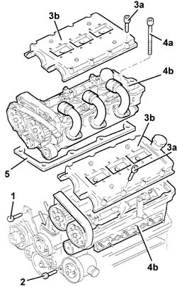
Applies to: engines: 2.5 V6; all production periods
1. Fit the cylinder/bore locks.
 | Name | Country |
|---|---|---|
1 | Liner/bore holder | 1.820.279.000 |
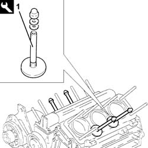
Applies to: engines: 2.5 V6; all production periods
Refitting
RemovingRotate the crankshaft until the piston of cylinder no. 1 is at T.D.C.
1. Before fitting the cylinder head, rotate the camshafts using the tool (1a) until the reference marks (1b) on the shafts line up with the cylinder head top surface.
| Name | Country |
|---|---|---|
1a | Counter-torque | 1.822.146.000 |
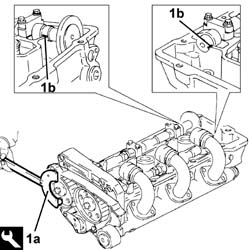
Applies to: engines: 2.5 V6; all production periods
Remove the bore/liner locks.
| Name | Country |
|---|---|---|
- | Liner/bore holder | 1.820.279.000 |
Make sure that the bushes centering the cylinder head on the cylinder block are fitted.
Fit the new cylinder head gaskets.
Position the cylinder heads on the engine block.
1. Tighten the nuts for the cylinder heads (1a) to the recommended torque using the angular tightening tool (1b).
 | Fastening | Component | Ø | Value (daNm) |
|---|---|---|---|---|
1a | Nut | CYLINDER HEAD | M12 | Engine crankcase side 2.4 ÷ 2.6 ÷ 240? |
| Name | Country |
|---|---|---|
1b | Protractor | 1.860.942.000 |
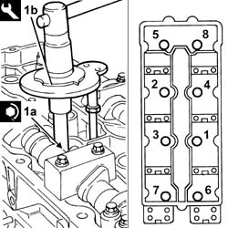
Applies to: engines: 2.5 V6; all production periods
1. Remove the camshaft caps 4 and 7 from the left cylinder head.
2. Remove the camshaft caps B and G from the right cylinder head.
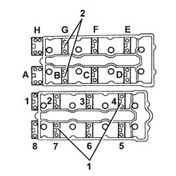
Applies to: engines: 2.5 V6; all production periods
1. Fit the tool in place of the removed camshaft caps.
| Name | Country |
|---|---|---|
1 | Gauge | 1.825.040.000 |
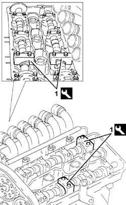
Applies to: engines: 2.5 V6; all production periods
Slacken the bolts on the camshaft drive pullies using the tool as counter-torque.
| Name | Country |
|---|---|---|
- | Counter-torque | 1.822.146.000 |
1. Fit the tool (1a), complete with dial gauge (1b), in the housing of the spark plug for cylinder no. 1.
| Name | Country |
|---|---|---|
1a | Extension | 1.825.013.000 |
Rotate the crankshaft, using small movements (in both directions), until the piston for cylinder no. 1 is at T.D.C. at the power stroke.
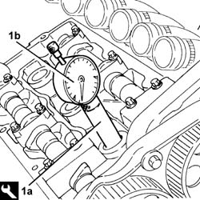
Applies to: engines: 2.5 V6; all production periods
1. Fit the timing belt starting from the drive pulley and continuing in an anti-clockwise direction, making sure that the drive sections are firmly taut.
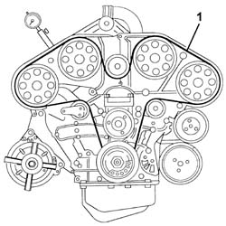
Applies to: engines: 2.5 V6; all production periods
1. Fit the tool (1a) and secure it with the alternator bolt (1b) and the bolt (1c) to the water pump.
| Name | Country |
|---|---|---|
1a | Belt tensioner | 1.860.950.000 |
2. Adjust the nut (2a) of the belt tensioner tool until the moving reference on the belt tensioner (2b) is under the fixed reference.
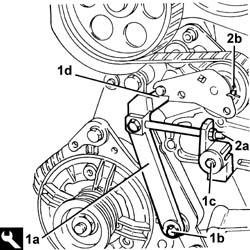
Applies to: engines: 2.5 V6; all production periods
1. Tighten the bolts (1a) for the camshaft pullies to torque using the tool (1b) for counter-torque.
| Fastening | Component | Ø | Value (daNm) |
|---|---|---|---|---|
1a | Bolt | TIMING GEAR DRIVEN PULLEYS | M10 | 6.8 ÷ 8.4 |
| Name | Country |
|---|---|---|
1b | Counter-torque | 1.822.146.000 |
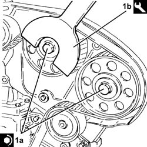
Applies to: engines: 2.5 V6; all production periods
Remove the tool.
| Name | Country |
|---|---|---|
- | Gauge | 1.825.040.000 |
Fit the camshaft caps in place of the removed tool and tighten the bolts to torque.
| Fastening | Component | Ø | Value (daNm) |
|---|---|---|---|---|
- | Bolt | CAMSHAFT CAPS | M8 | (Cylinder head side) 1.8 ÷ 2.0 |
Rotate the crankshaft through two revolutions in its direction of rotation to allow the timing belt to bed in.
1. Check that the moving reference on the timing belt tensioner lines up with the fixed reference.
2. If the references do not line up, slightly discharge the tensioner acting on the tensioning tool nut and make sure that the references are aligned.
3. Tighten the timing belt tensioner bolts to the specified torque.
| Fastening | Component | Ø | Value (daNm) |
|---|---|---|---|---|
3 | Bolt | MOBILE TIMING TENSIONER | M8 | 1.7 ÷ 2.1 |
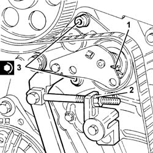
Applies to: engines: 2.5 V6; all production periods
Remove the tool.
| Name | Country |
|---|---|---|
- | Belt tensioner | 1.860.950.000 |
Fit the tappet covers and fix them with their bolts.
Fit the exhaust manifolds and fix them using the nuts.
Fit the left exhaust manifold shield and fix it using the nuts.
Fit the oil level dipstick and fix it using the bottom nut and top bolt.
Fit the thermostat and fix it using the bolts.
Connect, to the thermostat, the coolant supply pipe to the water-oil heat exchanger.
Fit the ignition coils and fix them using the bolts.
Fit the bracket securing the timing cover and fix it using the bolts.
Connect the flexible pipe to the fuel distribution manifold rigid pipe.
Tighten the bolt joining the timing belt rear covers.
Fit the timing belt covers and fix them using the bolts.
Fit the single drive belt.
Push the single belt tensioner with a spanner to remove the belt tensioner retaining pin.
Place the electrical wiring back in its housing and fix it to the bands.
Connect the electrical connections to the ignition coils.
Connect the electrical connections to the injectors.
Fit the electrical wiring securing brackets to the rocker covers and fix them using the bolts.
Connect the electrical connection for the front knock sensor.
Connect the electrical connection for the air conditioning compressor.
Fit the left cylinder head ignition coils cover and fix it using the bolts.
Connect the earth lead to the left cylinder head tappet cover.
Connect the electrical connection to the engine coolant temperature sensor.
Connect the electrical connection to the combined sender unit for the coolant temperature gauge and overheating warning light.
Connect the electrical connection for the rear knock sensor (black).
Connect the electrical connection for the rpm and timing sensor (black).
Connect the electrical connection for the cam angle sensor (light blue).
Fit the complete intake chamber and fix it using the bolts.
Tighten the bands fixing the air intake ducts to the intake chamber.
Connect the condensation oil return pipe to the separator.
Connect the oil vapour recovery pipe.
Connect the electrical connection to the motorized throttle body actuator.
Connect the earth lead on the left cylinder head rocker cover.
Proceed with the refitting 1004D40 engine - position on stand and remove .
Applies to: engines: 3.2 V6; all production periods
Removing
RefittingProceed with the removal 1004D40 engine - position on stand and remove .
1. Open the cover of the electrical connection box.
2. Disconnect the electrical connection for the knock sensor timing side.
| Name | Connector |
|---|---|---|
2 | Detonation sensor - 1 |
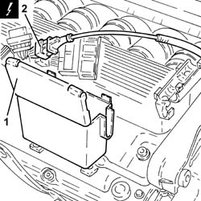
Applies to: engines: 3.2 V6; all production periods
1. Loosen the bands fixing the inlet ducts to the air chamber.
2. Loosen the band securing the engine oil vapour recovery pipe to the air chamber.
3. Disconnect the electrical connection from the throttle casing integrated with the D.V.L.
| Name | Connector |
|---|---|---|
3 | Throttle body actuator |
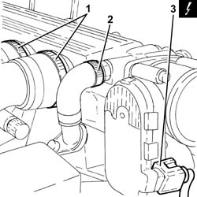
Applies to: engines: 3.2 V6; all production periods
1. Undo the fixing bolt (1a) and disconnect the earth lead (1b) from the air capacity chamber.
| Name | Connector |
|---|---|---|
1b | Earth on engine |
2. Undo the bolt fixing the reinforcement strut to the support on the engine for the reaction rod.
3. Undo the bolts (3a) and remove the air chamber (3b).
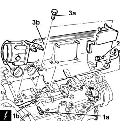
Applies to: engines: 3.2 V6; all production periods
1. Undo the bolts (1a) and remove the intake pipes (1b) complete with hoses (1c).
2. Remove the gaskets.
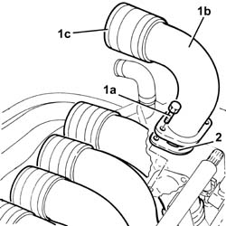
Applies to: engines: 3.2 V6; all production periods
1. Disconnect the electrical connections from the right cylinder head injectors.
| Name | Connector |
|---|---|---|
1 | Injector |
2. Disconnect the electrical connections from the right cylinder head ignition coils.
| Name | Connector |
|---|---|---|
2 | Ignition coil |
3. Undo the bolts (3a) and move the duct electrical wiring (3b) to the side.
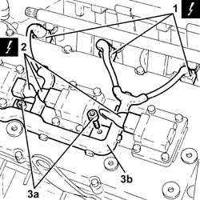
Applies to: engines: 3.2 V6; all production periods
1. Undo the bolt (1a) and release the cam angle sensor (1b) from its housing.
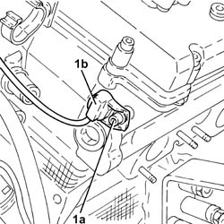
Applies to: engines: 3.2 V6; all production periods
1. Undo the bolts (1a) and remove the ignition coils (1b) from the right cylinder head.
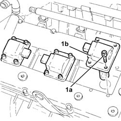
Applies to: engines: 3.2 V6; all production periods
1. Disconnect the electrical connection from the coolant temperature sensor.
| Name | Connector |
|---|---|---|
1 | Engine temperature sender unit |
2. Open the cover of the electrical connection box.
3. Release the electrical connections and the wiring from the connector box.
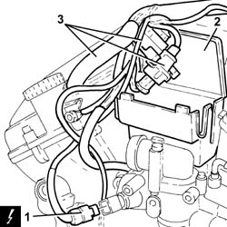
Applies to: engines: 3.2 V6; all production periods
1. Undo the bolts (1a) and remove the thermostat (1b) complete with connector box (1c).
2. Remove the adaptor.
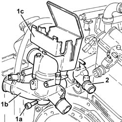
Applies to: engines: 3.2 V6; all production periods
1. Disconnect the electrical connection for the knock sensor flywheel side.
| Name | Connector |
|---|---|---|
1 | Knock sensor - 2 |
2. Disconnect the electrical connection for the rpm sensor.
| Name | Connector |
|---|---|---|
2 | Rpm sensor |
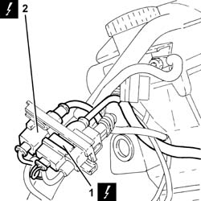
Applies to: engines: 3.2 V6; all production periods
1. Undo nut (1a) and disconnect earth lead (1b) from the left cylinder head.
| Name | Connector |
|---|---|---|
1b | Earth on engine |
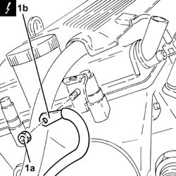
Applies to: engines: 3.2 V6; all production periods
1. Undo the bolts (1a) and remove the left cylinder head ignition coils cover (1b).
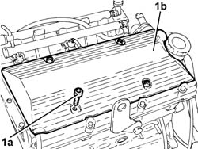
Applies to: engines: 3.2 V6; all production periods
1. Disconnect the electrical connections from the left cylinder head injectors.
| Name | Connector |
|---|---|---|
1 | Injector |
2. Disconnect the electrical connections from the left cylinder head ignition coils.
| Name | Connector |
|---|---|---|
2 | Ignition coil |
3. Undo the bolts (3a) and move the duct electrical wiring (3b) to the side.
4. Remove the engine wiring.
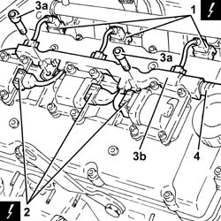
Applies to: engines: 3.2 V6; all production periods
1. Undo the bolts (1a) and remove the ignition coils (1b) from the left cylinder head.
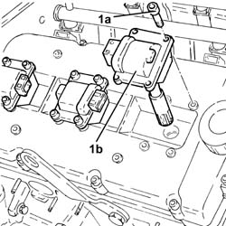
Applies to: engines: 3.2 V6; all production periods
1. Disconnect the rapid connector for the fuel manifold pipes.
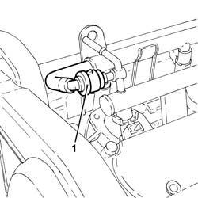
Applies to: engines: 3.2 V6; all production periods
1. Undo the bolts (1a) and remove the upper protective timing cover (1b).
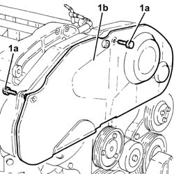
Applies to: engines: 3.2 V6; all production periods
1. Undo the bolts (1a) and remove the lower protective timing covers (1b).
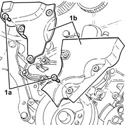
Applies to: engines: 3.2 V6; all production periods
1. Loosen the bolts fixing the moving timing belt tensioner.
2. Release the timing drive belt from the driven pullies.
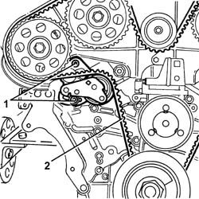
Applies to: engines: 3.2 V6; all production periods
1. Undo the bolts fixing the left rear timing belt protective cover to the right cylinder head.
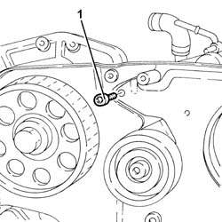
Applies to: engines: 3.2 V6; all production periods
1. Undo the bolts (1a), the bolt (1b) and remove the bracket (1c).
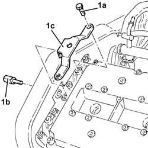
Applies to: engines: 3.2 V6; all production periods
1. Undo the bolt fixing the power assisted steering pump.
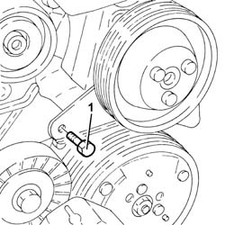
Applies to: engines: 3.2 V6; all production periods
1. Undo the bolts (1a) and remove the tappet cover for the left cylinder head (1b), complete with gasket.
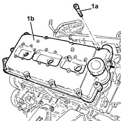
Applies to: engines: 3.2 V6; all production periods
1. Undo the bolts (1a) fixing the driven pullies using the tool (1b) for counter-torque.
| Name | Country |
|---|---|---|
1b | Counter-torque | 1.822.146.000 |
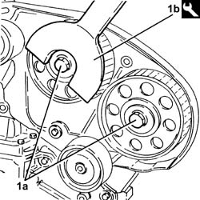
Applies to: engines: 3.2 V6; all production periods
1. Remove the driven pullies (1a) using the tool (1b).
| Name | Country |
|---|---|---|
1b | Extractor | 1.860.954.001 |
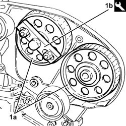
Applies to: engines: 3.2 V6; all production periods
1. Undo the bolts (1a) and remove the timing belt fixed tensioners (1b).
2. Undo the bolts (2a) and remove the left rear protective timing cover (2b).
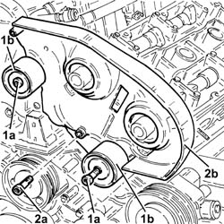
Applies to: engines: 3.2 V6; all production periods
1. Undo the nuts (1a) fixing the left cylinder head using the tool (1b).
| Name | Country |
|---|---|---|
1b | Spanner | 1.822.121.000 |
Remove the left cylinder head and gasket.
Applies to: engines: 3.2 V6; all production periods
1. Undo the bolts (1a) and remove the right rear protective timing cover (1b).
Applies to: engines: 3.2 V6; all production periods
1. Undo the bolts (1a) and remove the right cylinder head tappet cover (1b), complete with gasket.
Applies to: engines: 3.2 V6; all production periods
1. Undo the bolts (1a) and remove the alternator bracket (1b).
Applies to: engines: 3.2 V6; all production periods
1. Undo the nuts (1a) fixing the right cylinder head using the tool (1b).
| Name | Country |
|---|---|---|
1b | Spanner | 1.822.121.000 |
Remove the right cylinder head and gasket.
Applies to: engines: 3.2 V6; all production periods
1. Fit the cylinder/bore locks.
| Name | Country |
|---|---|---|
1 | Liner/bore holder | 1.820.279.000 |
Applies to: engines: 3.2 V6; all production periods
Refitting
Removing1. Carry out a preliminary timing check on the camshafts: fit a spanner in the special housing (1a) in the centre of the camshafts and rotate it until the reference markts (1b) on the actual shafts coincides with the cylinder head upper plane.
Applies to: engines: 3.2 V6; all production periods
1. Remove the camshaft caps 4 and 7 from the left cylinder head.
2. Remove the camshaft caps B and G from the right cylinder head.
Applies to: engines: 3.2 V6; all production periods
1. Fit the timing templates in place of the camshaft caps removed.
| Name | Country |
|---|---|---|
1 | Gauge | 1.870.849.000 |
Applies to: engines: 3.2 V6; all production periods
Remove the bore/liner locks.
| Name | Country |
|---|---|---|
- | Liner/bore holder | 1.820.279.000 |
Position the cylinder head centering bushes on the cylinder block/crankcase.
1. Position the new cylinder head gaskets (1a), taking care to fit the lubrication duct seals (1b) (two for each cylinder head).
Applies to: engines: 3.2 V6; all production periods
Position cylinder no. 1 at T.D.C. before fitting the cylinder heads on the cylinder block/crankcase.
Position the cylinder heads on the cylinder block/crankcase.
1. Tighten the nuts (1a) fixing the cylinder heads to the recommended torque using the angular tightening tools (1b) and (1c).
| Fastening | Component | Ø | Value (daNm) |
|---|---|---|---|---|
1a | Nut | CYLINDER HEAD | M12 | (Engine crankcase side) 2.4 ÷ 2.6 + 228? ÷ 232? |
| Name | Country |
|---|---|---|
1b | Protractor | 1.860.942.000 |
| Name | Country |
|---|---|---|
1c | Spanner | 1.822.121.000 |
Applies to: engines: 3.2 V6; all production periods
Refit the alternator bracket in its seating and fix it using the bolts.
Place the rear protective timing covers back in their housings and secure them using the bolts.
1. Place the timing belt fixed tensioners (1a) back in their housings and secure them tightening the bolts (1b) to the recommended torque.
| Fastening | Component | Ø | Value (daNm) |
|---|---|---|---|---|
1b | Bolt | FIXED TENSIONER | M10 | (Cylinder head side) 4.5 ÷ 5.5 |
2. Place the driven toothed pullies (2a) back in their housings and secure them without tightening the bolts (2b).
Applies to: engines: 3.2 V6; all production periods
Tighten the bolt fixing the left rear timing belt protective cover to the right cylinder head.
1. Fit the tool (1a), complete with dial gauge (1b), in the housing of the spark plug for cylinder no. 1.
| Name | Country |
|---|---|---|
1a | Fitting tool | 1.821.225.000 |
Rotate the crankshaft, using small movements (in both directions), until the piston for cylinder no. 1 is at T.D.C. at the power stroke.
Applies to: engines: 3.2 V6; all production periods
1. Fit the toothed timing drive belt starting from the toothed drive pulley and continuing in an anti-clockwise direction making sure that the drive sections are firmly taut.
Applies to: engines: 3.2 V6; all production periods
1. Fit the tool (1a) and secure it with bolt (1b) to the alternator bracket and with bolt (1c) to the water pump.
| Name | Country |
|---|---|---|
1a | Belt tensioner | 1.860.950.000 |
2. Act on the nut (2a) for the belt tensioner tool until the moving reference on the moving belt tensioner (2b) is under the fixed reference.
Applies to: engines: 3.2 V6; all production periods
1. Tighten the bolts (1a) fixing the toothed driven pullies using the tool (1b) for counter-torque.
| Fastening | Component | Ø | Value (daNm) |
|---|---|---|---|---|
1a | Bolt | TIMING GEAR DRIVEN PULLEYS | M12 | (Camshaft side) 7.2 ÷ 8.8 |
| Name | Country |
|---|---|---|
1b | Counter-torque | 1.822.146.000 |
Applies to: engines: 3.2 V6; all production periods
Remove the tools for timing the camshafts.
| Name | Country |
|---|---|---|
- | Gauge | 1.870.849.000 |
Place the camshaft caps back in their housings in place of the tools removed and tighten the bolts to the recommended torque.
| Fastening | Component | Ø | Value (daNm) |
|---|---|---|---|---|
- | Bolt | CAMSHAFT CAPS/ | M8 | (Cylinder head side) 1.8 ÷ 2.0 |
Rotate the crankshaft through two revolutions in its direction of rotation to allow the timing belt to bed in.
1. Check that the moving reference on the timing belt moving tensioner lines up with the fixed reference.
2. If the references do not line up, slightly discharge the tensioner acting on the tensioning tool nut and make sure that the references are aligned.
3. Tighten the bolts for the moving tensioner to the recommended torque.
| Fastening | Component | Ø | Value (daNm) |
|---|---|---|---|---|
3 | Bolt | MOBILE TIMING TENSIONER | M8 | (Cylinder head side) 1.9 ÷ 2.3 |
Applies to: engines: 3.2 V6; all production periods
Remove the belt tensioner tool.
| Name | Country |
|---|---|---|
- | Belt tensioner | 1.860.950.000 |
1. Place the cylinder head tappet covers (1a) complete with gaskets back in their housings and secure them tightening the bolts (1b) to the recommended torque.
| Fastening | Component | Ø | Value (daNm) |
|---|---|---|---|---|
1b | Bolt | CAM COVERS | M7 | (Cylinder head side) 1.4 ÷ 1.7 |
Applies to: engines: 3.2 V6; all production periods
1. Tighten the power steering pump bolt to the specified torque.
| Fastening | Component | Ø | Value (daNm) |
|---|---|---|---|---|
1 | Bolt | POWER STEERING PUMP | M8 | (Support side) 2.3 ÷ 2.8 |
2. Place the bracket (2a) back in its housing and secure it using the bolt (2b) and the bolts (2c).
Applies to: engines: 3.2 V6; all production periods
Place the lower protective timing covers back in their housings and secure them using the bolts.
Fit the upper protective timing gear cover and fix it using the bolts.
Connect the rapid connector for the fuel manifold pipes.
1. Place the ignition coils (1a) back in their housings on the left cylinder head and secure them tightening the bolts (1b) to the recommended torque.
| Fastening | Component | Ø | Value (daNm) |
|---|---|---|---|---|
1b | Bolt | IGNITION COIL/REEL | M6 | (Tappet cover side) 0.8 ÷ 1.0 |
Applies to: engines: 3.2 V6; all production periods
Place the engine wiring back in its housing.
Place the electrical wiring duct back in its housing and secure it using the bolts.
Connect the electrical connections to the left cylinder head ignition coils.
Connect the electrical connections to the left cylinder head injectors.
Fit the ignition coils cover on the left cylinder head and fix it using the bolts.
Connect the earth lead to the left cylinder head and secure using the nut.
Connect the electrical connection for the knock sensor flywheel side.
Connect the electrical connection for the rpm sensor.
1. Place the connector back in its housing.
2. Place the thermostat (2a) back in its housing and secure it tightening the bolts (2b) to the recommended torque.
| Fastening | Component | Ø | Value (daNm) |
|---|---|---|---|---|
2b | Bolt | THERMOSTAT | M6 | (Cylinder head side) 0.8 ÷ 1.0 |
Applies to: engines: 3.2 V6; all production periods
Place the wiring and the connections in the connection box, then close the cover.
Connect the electrical connection to the water temperature sensor.
1. Place the ignition coils (1a) back in their housing on the right cylinder head and secure them tightening the bolts (1b) to the recommended torque.
| Fastening | Component | Ø | Value (daNm) |
|---|---|---|---|---|
1b | Bolt | IGNITION COIL/REEL | M6 | (Tappet cover side) 0.8 ÷ 1.0 |
Applies to: engines: 3.2 V6; all production periods
1. Plact the cam angle sensor (1a) back in its housing and secure it tightening the bolt (1b) to the recommended torque.
| Fastening | Component | Ø | Value (daNm) |
|---|---|---|---|---|
1b | Bolt | CAM ANGLE SENSOR | M6 | (Cylinder head side) 0.7 ÷ 0.8 |
Applies to: engines: 3.2 V6; all production periods
Place the electrical wiring duct back in its housing and secure it using the bolts.
Connect the electrical connections to the right cylinder head ignition coils.
Connect the electrical connections to the right cylinder head injectors.
1. Place the intake manifolds (1a), complete with hoses (1b) and gaskets (1c) back in their housings and tighten the bolts (1d) to the recommended torque.
| Fastening | Component | Ø | Value (daNm) |
|---|---|---|---|---|
1d | Bolt | INLET MANIFOLD | M6 | (Intake manifold side) 0.6 ÷ 0.9 |
Applies to: engines: 3.2 V6; all production periods
Place the air chamber back in its housing and secure it using the bolts.
Tighten the bolt fixing the reinforcement strut to the support on the engine for the reaction rod.
Connect the earth lead to the air chamber and secure it using the bolt.
Connect the electrical connection to the throttle body integrated with the D.V.L.
Tighten the band securing the engine oil vapour recovery pipe to the air chamber.
Tighten the bands fixing the inlet ducts to the air chamber.
Connect the electrical connection for the knock sensor timing side.
Close the electrical connection box cover.
Proceed with the refitting 1004D40 engine - position on stand and remove .
Topics linked from this page (13)
- 1004D40 engine - position on stand and remove
- A30 Ignition coil
- C40 Earth on engine
- K35 Coolant temperature sender unit
- K36 Engine temperature sender unit
- K45 Engine temperature sensor
- K46 Rpm sensor
- K47 Timing sensor
- K50 Detonation sensor - 1
- K51 Knock sensor - 2
- L20 Air conditioning compressor "on" electromagnet
- N70 Injector
- N75 Throttle body actuator